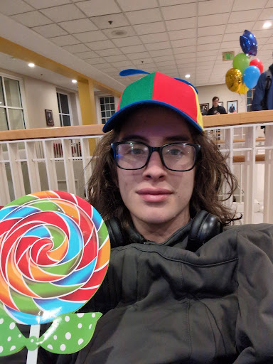

I am a student at SMCM majoring in computer science and minoring in creative writing. My dream in life is to create games and contribute to a culture that will respond constructively to political and environmental crises.
jedimindglitch@gmail.com
EeveMa on Github
EeveM on Linkedin
- Creating and playing board and video games.
- Writing articles for my local newspaper.
- Climbing trees and hiking in the woods.
Wall of Dead is a simple, top-down shoot 'em up game that I made with my classmates Theo P. and Thomas S. in the Pico-8 engine. Thanks to Pico-8 magic, the entire game is encoded in the below image, ready to play in the Pico-8 virtual machine.

Rate SMCM is a website currently in development, designed to allow users to rate places on and around the St. Mary's College of Maryland campus.
I am a contributing writer for my college's newspaper, The Point News. My work for them includes current events, game reviews, and puzzles.